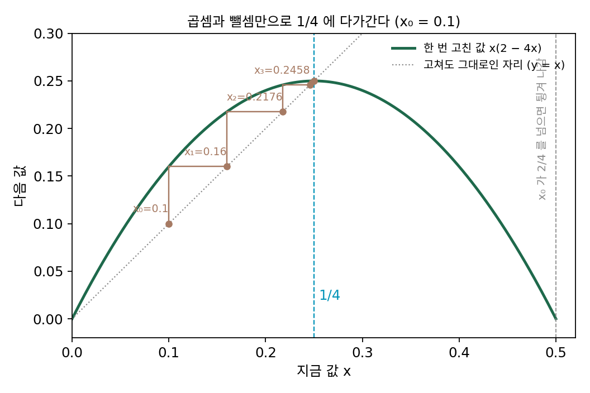
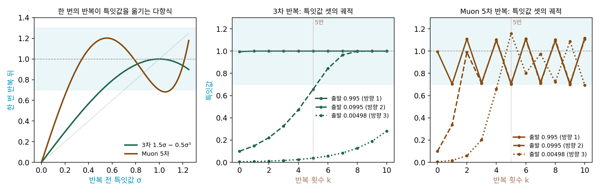
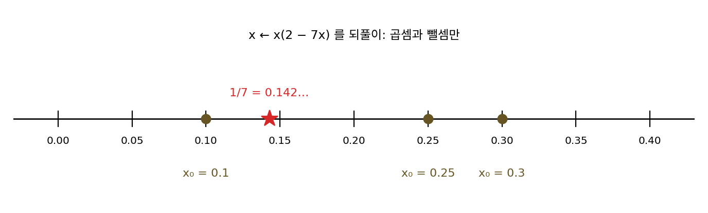
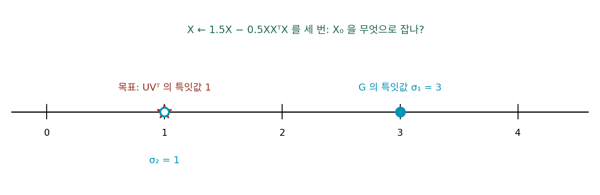
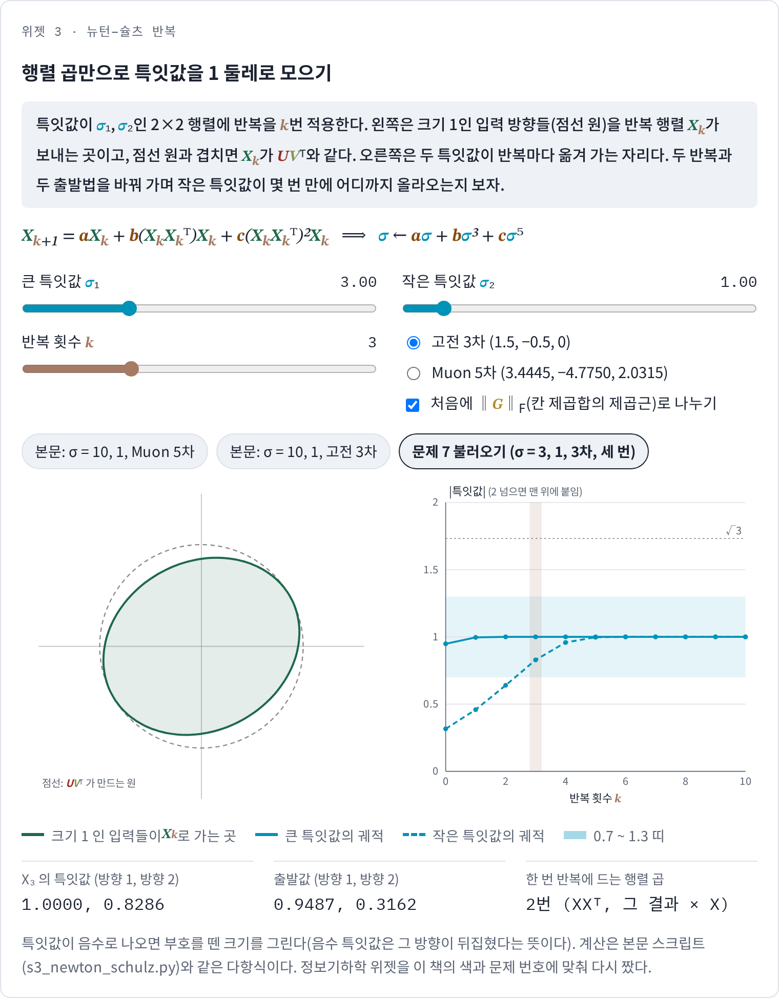
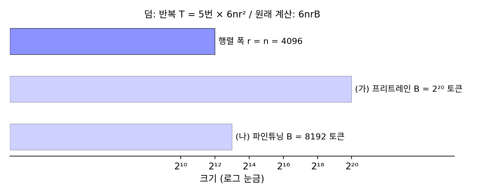
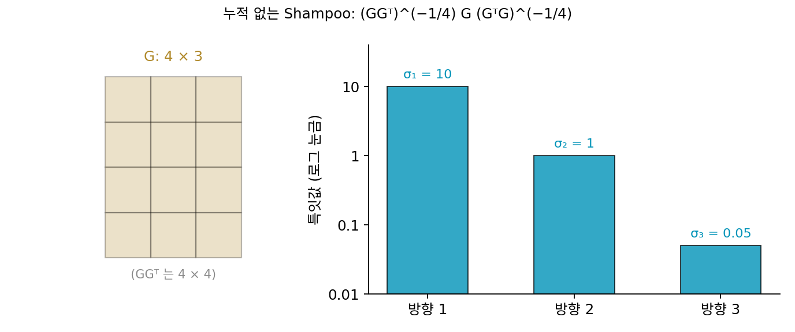

뉴턴–슐츠 반복: 행렬 곱만으로 직교화한다
직교화한 스텝 UVᵀ는 스텝마다, 층마다 새로 구해야 한다. 큰 언어 모델은 층마다 2차원 가중치 행렬이 여럿이라, 한 스텝에 직교화할 행렬이 수십에서 수백 개다. 행렬 하나의 특잇값 분해는 그래픽 처리 장치(GPU)가 잘하는 큰 행렬 곱과 달리 하나씩 차례로 계산해야 하는 부분이 많아 느린데, 스텝마다 특잇값 분해를 수백 번 하지 않고 UVᵀ를 얻을 길은 없을까? 특잇값을 하나하나 알아낼 필요는 없고, 모두 1로 바꾸기만 하면 된다.
역사: 나눗셈 없이 역수를 구하던 반복에서
출발점은 수 하나의 역수를 나눗셈 없이 구하는 뉴턴법이다. a의 역수 1/a는 x ← x(2 − a·x)를 되풀이하면 곱셈과 뺄셈만으로 얻는다. 오차를 e = 1 − a·x로 두면 한 번 고칠 때마다 오차가 제곱이 되므로(1 − a·x(2 − a·x) = (1 − a·x)²), 시작값이 0과 2/a 사이에만 있으면 금세 맞는다.

1933년 독일의 G. 슐츠(G. Schulz)는 응용수학·역학 학술지(ZAMM)에 낸 세 쪽짜리 글 「역행렬의 반복 계산(Iterative Berechnung der reziproken Matrix)」에서 이 반복을 행렬로 옮겼다. 수 a 자리에 행렬 A를 놓으면 X ← X(2I − AX)이고, 행렬 곱만 되풀이해 역행렬에 다가간다. 같은 생각은 행렬을 가장 가까운 직교 행렬, 곧 특잇값이 모두 1인 행렬로 다듬는 데에도 쓰였다. Z. 코바릭(Z. Kovarik)은 1970년 SIAM 수치해석 학술지에 낸 「정규 직교성을 높이는 몇 가지 반복법(Some Iterative Methods for Improving Orthonormality)」에서 일차 독립인 벡터 묶음을 직교에 가깝게 다듬는 반복을 냈고, 1971년 오케 비에르크(Åke Björck)와 C. 보위(C. Bowie)는 「직교 행렬의 가장 좋은 근사를 구하는 반복 알고리즘」에서 같은 계열의 반복을 다뤘다. 켈러 조던은 자기 옵티마이저 글에서 이 반복의 출처로 이 논문들을 든다.

나눗셈을 피하려고 반복을 돌린다니, 1/a 는 그냥 나누면 되잖아요. 행렬이면 역행렬 함수를 부르면 되고요.

1933년에 4×4 역행렬을 구한다면 손으로, 아니면 손으로 크랭크를 돌리는 기계식 계산기로 했어요. 열여섯 칸을 소거하는 동안 어디선가 반올림이 끼어요. 그렇게 얻은 역행렬이 조금 틀렸다면 어떻게 해요?

처음부터 다시 하기엔 너무 길고요… 틀린 값을 고쳐 쓸 방법이 있어야겠네요.

아, 오차가 한 번에 제곱이 된다고 했죠. 조금 틀린 X 에 X(2I − AX)를 한 번 하면 오차가 0.01에서 0.0001 쪽으로 줄겠네요. 곱셈만으로요.

코바릭과 비에르크의 반복도 비슷한 처지에서 나왔어요. 직교여야 할 벡터 묶음이 계산하다 보면 반올림 때문에 조금씩 어긋나기도 해요. 처음부터 다시 직교화하지 않고, 거의 직교인 묶음을 곱셈 몇 번으로 다듬는 거죠.

곱셈만 쓴다는 점이 그때는 손계산의 오차를 고치는 데 쓸모 있었다면, 지금은 GPU 가 행렬 곱을 잘해서 쓸모 있는 거네요. 그런데 역수를 구하던 반복이 어떻게 특잇값을 1로 모으는 반복이 되는 거죠?
특잇값만 다항식으로 옮긴다
직교화하려는 행렬을 X라 하고 다음 반복을 생각하자. 계수 a, b, c는 정해 둔 수다.
X = UΣVᵀ를 넣어 보면 이 반복이 하는 일이 드러난다. XXᵀ = UΣ²Uᵀ이므로 (XXᵀ)X = UΣ³Vᵀ이고, 결국 Xk+1 = U(aΣ + bΣ³ + cΣ⁵)Vᵀ다. 두 돌리기 U, V는 그대로 두고, 특잇값 하나하나를 다항식 p(σ) = aσ + bσ³ + cσ⁵로 옮긴다. 이 다항식이 모든 특잇값을 1로 끌고 가면, 특잇값을 하나도 계산하지 않고 UVᵀ에 닿는다. 행렬을 바꿔 가며 특잇값만 옮기는 이 반복을 뉴턴–슐츠 반복 (행렬 곱을 되풀이해 특잇값을 1로 모으기 / Newton–Schulz iteration)이라 한다. 고전 3차 반복 1.5σ − 0.5σ³은 σ = 1에서 값이 1이고 그래디언트가 0이라, 1 근처의 특잇값을 아주 빨리 1에 붙인다. 처음에 왜 ‖G‖F로 나누는지는 아래 문제 7에서 따져 본다.
직교화를 처음 설명할 때 쓴, 특잇값이 10, 1, 0.05인 4×3 그래디언트에 두 반복을 돌려 보자(sources/muon/s3_newton_schulz.py). ‖G‖F = 10.05로 나누면 특잇값이 (0.995, 0.0995, 0.005)에서 출발한다.
| 반복 | 방향 1 | 방향 2 | 방향 3 | ‖X − UVᵀ‖F |
|---|---|---|---|---|
| 출발 | 0.995 | 0.0995 | 0.005 | |
| 고전 3차 5번 | 1.000 | 0.656 | 0.038 | 1.022 |
| 고전 3차 10번 | 1.000 | 1.000 | 0.281 | |
| 5차 5번 | 0.702 | 0.709 | 1.157 | 0.445 |
| 5차 10번 | 1.117 | 1.105 | 0.694 |
고전 3차 반복은 정확하지만 느리다. 작은 특잇값 근처에서 1.5σ − 0.5σ³ ≈ 1.5σ라서, 한 번에 1.5배밖에 키우지 못한다. 0.005는 열 번을 돌려도 0.28까지밖에 오지 못하지만, 5차 반복은 첫 계수 a = 3.4445가 작은 특잇값을 한 번에 3.4배쯤 키운다. 다섯 번 만에 0.005가 1.157이 되고, 셋 모두 0.70~1.16 사이에 모인다. 대신 정확히 1에 앉지 않는다. p(1) = 0.701이라 1에 닿은 특잇값은 다음 반복에서 0.7로 내려가고, 그 뒤로도 0.69와 1.12 사이를 오간다.

이 계수는 켈러 조던이 2024년에 골랐다. 그는 반복 끝의 특잇값이 정확히 1이 아니라 1 둘레 0.7~1.3 어딘가에 머물러도 학습 곡선에 해가 없다는 것을 실험으로 보고, 그 범위를 지키는 한에서 첫 계수 a를 가장 크게 하는 계수를 찾았다. 「정확히」를 「충분히 비슷하게」로 바꾸고 그 대가로 반복 횟수를 줄인 것으로, 다섯 번 반복이면 충분했다. 그는 특잇값 분해는 너무 느리고, 큰 행렬의 거듭제곱근을 구하던 다른 반복(Shampoo 구현들이 쓰던 결합 뉴턴 반복)은 32비트 실수 이상의 정밀도에서만 안정해서 요즘 GPU 에서 느리지만, 뉴턴–슐츠 반복은 16비트 실수(bfloat16)로도 안정하게 돈다고 적었다.
ML에서: 속도 경주에서 1조 개 규모 모델까지
켈러 조던은 이 옵티마이저를 논문이 아니라 공개 속도 경주에서 내놓았다. 작은 언어 모델(NanoGPT)을 FineWeb 데이터에서 정해 둔 검증 손실까지 가장 빨리 학습시키는 경주와, CIFAR-10 이미지 분류를 정해 둔 정확도까지 가장 빨리 학습시키는 경주다. 2024년 가을, 옵티마이저를 AdamW 에서 이것으로 바꾼 기록이 언어 모델 경주의 학습 속도를 3분의 1쯤 끌어올렸다. 몇 초 남짓이던 CIFAR-10 기록도 5분의 1쯤 더 줄었다. 이름은 「뉴턴–슐츠 반복으로 직교화한 모멘텀(MomentUm Orthogonalized by Newton–Schulz)」을 줄인 Muon 이다. 한 스텝은 이렇다.
괄호 안은 지난 그래디언트들의 이동 평균 쪽으로 한 스텝 더 내다본 그래디언트(네스테로프 모멘텀)이고, 직교화하는 것은 날것의 그래디언트가 아니라 이것이다. 공개 구현은 세로로 긴 행렬일 때 스텝에 √(행 수/열 수)를 곱하는 보정도 한다. 조던은 그해 말 블로그 글에서, AdamW 를 크게 이겼다고 주장한 옵티마이저 논문은 많았지만 끝내 아무도 쓰지 않게 된 것이 대부분이라며 이를 「죽은 옵티마이저들의 무덤」이라 불렀고, 그렇게 된 것은 대개 비교 대상인 AdamW 를 제대로 조율하지 않았기 때문이라고 보았다. 경주에서는 직전 기록이 곧 비교 대상이고, 많은 사람이 이미 그 기록을 조율해 놓았다. 그 글을 쓸 때까지 그 뒤의 기록 열 번 남짓을 여러 사람이 세웠고, 모두 Muon 을 썼다. 그는 글 끝에, 파라미터 수백억 개와 토큰 1조 개 규모를 넘는 학습에서도 통하느냐를 답하지 못한 물음으로 남겼다.
답은 이듬해 나왔다. 문샷 AI(Moonshot AI)의 류징위안(Jingyuan Liu), 쑤젠린(Jianlin Su)과 동료들은 2025년 초 「Muon 은 큰 언어 모델 학습으로 커질 수 있다(Muon is Scalable for LLM Training)」를 냈다. 그들은 가중치 감쇠를 더하고 파라미터마다 스텝의 크기를 조심스럽게 맞추는 두 가지 조정으로, 계산량을 최적으로 배분한 학습에서 AdamW 보다 약 두 배의 계산 효율을 보고했다. 같은 회사가 그해 여름에 낸 Kimi K2 는 파라미터가 모두 1조 개 규모이고 토큰 하나에 실제로 쓰이는 것은 그 30분의 1쯤인 전문가 혼합 모델(입력마다 일부 하위 신경망만 쓰는 구조)이다. 회사는 Muon 에 어텐션 점수가 폭주하지 않게 막는 장치(QK-clip)를 더한 MuonClip 으로 이 모델에 토큰 십수조 개를 학습시키는 동안 손실이 한 번도 치솟지 않았다고 밝혔다. 이 장에서 쓴 다섯 번의 행렬 곱이 학습 전체에서 얼마나 큰 덤인지는 아래 문제 8에서 계산한다.
Muon 이 모든 특이 방향을 똑같이 1로 만든다는 점을 약점으로 보는 연구도 나오고 있다. 손실이 방향마다 다르게 휘어 있다면 「모두 같게」는 그 곡률 정보를 버리는 셈이라는 것이다. 쉬천루이(Chenrui Xu), 옌원징(Wenjing Yan), 장잉쥔(Ying-Jun Angela Zhang)이 2026년 초에 낸 FISMO(피셔 구조를 넣은 모멘텀 직교화)는 스텝을 정하는 문제를 층마다 작은 두 행렬로 근사한 피셔 행렬로 잰 범위 안에서 풀어, 직교화와 곡률 근사를 함께 쓰자고 제안했다. 이런 방향이 얼마나 쓸모 있을지는 아직 정해지지 않았다.
문제 6. 나눗셈 단추가 고장 난 계산기
계산기의 나눗셈 단추가 고장 나서, 1/7을 구하려고 x ← x(2 − 7x)를 되풀이한다. (가) x₀ = 0.1에서 네 번 되풀이하면? (나) x₀ = 0.25에서는? x₀ = 0.3에서는? (다) 오차 1 − 7x는 한 번 되풀이할 때마다 어떻게 바뀌는가? 시작값은 어디에 있어야 하는가?

직접 눌러 볼게요. 0.1은 0.13, 0.1417, 0.142848, 0.142857로 네 번 만에 여섯 자리가 맞아요. 0.25는 0.0625로 한 번 크게 내려갔다가 0.0977, 0.1286, 0.1414로 올라오고요. 그런데 0.3은 −0.03, −0.0663, −0.163, −0.514, −2.87… 음수 쪽으로 끝없이 가요.
0.25와 0.3은 0.05밖에 차이 안 나는데 하나는 오고 하나는 터지네. 그 사이 어딘가에 경계가 있나 봐.
오차 e = 1 − 7x로 한 번 되풀이한 뒤의 오차를 적어 보면요?
1 − 7x(2 − 7x) = 1 − 14x + 49x²… 어, (1 − 7x)²이에요. 오차가 매번 제곱이 되네요.
0.1에서 시작하면 오차가 0.3이니까 0.09, 0.0081, 0.000066. 내가 누른 거랑 맞아.

그럼 제곱해서 줄어들려면 오차가 어디 있어야 하죠?

|e| < 1이요. x₀로 바꾸면 0 < x₀ < 2/7 = 0.2857이어야 해요.

0.25랑 0.3은?
0.25는 오차가 −0.75로 크지만 그 안이라 제곱하면 0.56으로 줄고, 0.3은 오차가 −1.1이라 제곱하면 1.21로 커져.
그럼 세 시작값은 무엇으로 갈리죠?
오차의 크기가 1보다 작은지요. 0.1은 오차 0.3, 0.25는 −0.75라 둘 다 그 안이고, 0.3은 −1.1이라 밖이에요. 0.25가 처음 몇 번 느렸던 건 0.1보다 오차가 커서였고요.

시작값을 일부러 작게 잡아 두면 안전하겠네요. 0 쪽으로는 0에 닿기 전까지 다 범위 안이니까요.
문제 7. 뉴턴–슐츠를 세 번
특잇값이 3, 1인 2×2 행렬 G = U·diag(3, 1)·Vᵀ에 고전 3차 반복 X ← 1.5X − 0.5XXᵀX를 세 번 적용해 UVᵀ를 얻으려 한다. (가) 나누지 않고 X₀ = G로 시작하면 어떻게 되는가? (나) 가장 큰 특잇값으로 나누면 처음부터 큰 특잇값이 1인데, 왜 굳이 ‖G‖F로 나누는가? (다) ‖G‖F로 나누고 시작하면 세 번이면 충분한가? (풀어 본 뒤 위젯 3의 「문제 7 불러오기」로 확인해 보자.)

X₀ = G로 넣고 세 번 돌렸는데 행렬이 엄청나게 커져요. 가장 큰 특잇값이 2천만이 넘어요.
특잇값 하나만 따라가 봐요. σ = 3이면 한 번 뒤에 얼마예요?

1.5 × 3 − 0.5 × 27 = −9. 그다음 351, 그다음 −2,162만… 폭발이네요. 반복이 UVᵀ로 가는 거라면서요. 왜 멀어져요?
특잇값 하나에 p(σ) = 1.5σ − 0.5σ³을 되풀이하는 거잖아. σ = 1을 넣으면 1이 그대로고. 3은 1에서 너무 멀어서 못 끌려오는 것 같아.
어디까지면 끌려올까요? p(σ)가 0보다 작아지는 경계부터 찾아보세요.
1.5σ = 0.5σ³이면 σ = √3이요. 0 < σ < √3이면 1로 가고, √3을 넘으면 다음 값이 음수가 돼요. √5를 넘으면 부호를 바꿀 때마다 더 커지면서 튕겨 나가고요. 나눗셈 없이 역수를 구할 때 시작값이 2/a 안에 있어야 했던 거랑 같아요.
그래서 X₀를 어떻게 잡아요?

가장 큰 특잇값으로 나누면 되는데… 그러려면 특잇값 분해를 해야 하잖아요. 그걸 피하려고 반복을 쓰는 건데.
특잇값을 몰라도 위에서 눌러 주는 값이 있으면 되잖아. ‖G‖F = √(Σσᵢ²) ≥ σ₁이니까 그걸로 나누면 모든 특잇값이 1 아래로 들어가.
칸 제곱합만 구하면 되니까 특잇값 분해도 필요 없네.
응. 여기서는 √10으로 나눠서 (0.949, 0.316). 0.316이면 본문에서 느렸던 0.005보다 훨씬 크니까 세 번이면 둘 다 1이겠지.
계산해 봐요.

0.949는 0.996, 1.000으로 금방 가는데, 0.316은 0.459, 0.640, 0.829예요. 세 번으로는 0.83에서 멈춰요. 네 번이면 0.958, 다섯 번은 돌려야 0.997이에요.
범위 안에 있다는 것과 몇 번 안에 도착하는지는 다른 물음이에요. 작은 σ 근처에서 p(σ) ≈ 1.5σ라 한 번에 1.5배밖에 안 커져요.
그래서 5차 다항식으로 0 근처의 그래디언트를 3.4배쯤으로 키운 거군요. 같은 출발점에 5차를 세 번 돌리면 (0.682, 1.041)로, 작은 쪽이 이미 1을 넘어요. 대신 큰 쪽이 1에 앉지 않고 0.68로 내려가 있고요.
위젯 3에서 문제 7 설정을 불러와 세 번 뒤 작은 특잇값이 어디에 있는지, 반복 횟수를 늘리면 언제 1에 붙는지 확인해 보세요.

문제 8. Muon 은 계산을 얼마나 더 하는가
r × n 가중치 행렬(r ≤ n)에 뉴턴–슐츠 반복을 한 번 돌리는 데 드는 곱셈·덧셈 수는 많아야 6nr²이고, 이 층이 학습 한 스텝(순전파와 역전파)에 쓰는 계산은 6nrB다. B는 한 스텝에 들어가는 토큰 수다. (가) r = n = 4096인 층, 반복 T = 5번, B = 2²⁰(약 105만) 토큰이면 Muon 이 더하는 계산은 원래 계산의 몇 %인가? (나) 파인튜닝처럼 B = 8192 토큰이면? (다) 덤은 무엇에 따라 커지는가?

덤은 T × 6nr², 원래는 6nrB니까 비는 Tr/B야. 5 × 4096/1048576 = 0.0195, 2%도 안 돼. 그럼 Muon 은 어디서나 2%짜리 덤이네.
다섯 번이라도 행렬 하나에 한 번씩이고, 원래 계산은 토큰 백만 개가 그 행렬을 하나하나 거치니까 그렇겠다.
토큰을 8192개로 줄이면요?

5 × 4096/8192 = 2.5… 250%예요. 덤이 원래 계산보다 커요.
같은 식인데 2%가 250%가 됐어?
비 Tr/B에서 무엇이 바뀌었죠?
B만요. B가 분모라서 한 스텝의 토큰이 적을수록, 행렬이 넓을수록 덤이 커지네요. 「2%」는 한 스텝에 토큰을 아주 많이 쓰는 프리트레인에서나 맞는 말이에요.
조던 블로그에도 이 계산이 있어요. 작은 속도 경주 설정이든 파라미터가 수천억 개인 큰 모델의 설정이든 1% 아래라고요. 예를 들어 r = 768, B = 524,288인 작은 설정과 r = 16,384, B = 1,600만인 큰 설정을 같은 식에 넣으면 0.73%, 0.51%가 나와요.

결혼식 하객용 전세 버스를 한 대 빌리면 마흔 명이 탈 때는 한 사람당 얼마 안 되는데, 세 명만 타면 한 사람당 차비가 축의금보다 비싸지는 거랑 같네요. 행렬 하나에 드는 계산은 정해져 있고, 그걸 나눠 낼 토큰이 몇 개냐가 비를 정하고요.
문제 9. 누적 없는 Shampoo 는 직교화다 (킬러)
층의 그래디언트 행렬 G에 왼쪽에서 (GGᵀ)의 누적의 −1/4 제곱, 오른쪽에서 (GᵀG)의 누적의 −1/4 제곱을 곱해 스텝을 만드는 옵티마이저가 Shampoo 였다. 누적을 끄고 이번 스텝의 그래디언트만 쓰면 스텝은 (GGᵀ)−1/4G(GᵀG)−1/4이다. (가) G = UΣVᵀ(정사각형, 특잇값이 모두 0보다 큼)일 때 이것이 UVᵀ임을 보여라. (나) G가 4×3이라 GGᵀ의 고윳값 하나가 0일 때 누적 없는 Shampoo 의 스텝은 무슨 뜻인가? (다) 특잇값 10, 1, 0.05인 4×3 그래디언트로 실제로 계산할 때 무엇을 조심해야 하는가?

(가)부터 해 볼게. −1/4 제곱이 바로는 안 보이니까 GGᵀ부터 풀어 보면… VᵀV가 지워져서 UΣ²Uᵀ야.
그럼 −1/4 제곱은?
고윳값에만 −1/4 제곱을 하면 되니까 (GGᵀ)−1/4 = UΣ−1/2Uᵀ. 같은 식으로 (GᵀG)−1/4 = VΣ−1/2Vᵀ.
셋을 차례로 곱하면요?
가운데서 UᵀU와 VᵀV가 지워지니까 UΣ−1/2·Σ·Σ−1/2Vᵀ = UVᵀ예요. 양쪽에서 특잇값을 반씩 깎아 1로 만드는 거네요.
여기서 U는 몇 × 몇이에요?
U가 정사각 직교 행렬이라고 놓았어요. G가 4×3이면… GGᵀ는 4×4인데 특잇값이 셋뿐이라 고윳값 하나가 0이에요. 0의 −1/4 제곱은 없으니까, (나)의 답은 「정의되지 않는다, 세로로 긴 행렬에는 못 쓴다」예요.
그 0 고윳값의 고유벡터는 G와 어떤 관계예요?
GGᵀz = 0이면 ‖Gᵀz‖² = 0이니까 z는 G의 열들과 모두 수직이에요. 아… G의 열에는 그 방향 성분이 아예 없어요. 그럼 그 방향에 무엇을 곱하든 G에는 안 닿아요.
그 방향에서 −1/4 제곱이 무엇을 하든 스텝에 안 닿는다면, 0 고윳값은 어떻게 다루면 될까요?

0 고윳값은 그냥 버리는 −1/4 제곱을 쓰면 되네요. 결과는 특잇값이 0이 아닌 방향만 남긴 UVᵀ고요. 못 쓰는 게 아니라, 뜻을 「G가 사는 부분 공간 위에서」로 좁히면 돼요.
코드로 해 봤는데요. 일반 고윳값 분해(np.linalg.eig)를 해서 고윳값에 −0.25 제곱을 하니까 결과에 nan 이 섞여 나와요.
고윳값을 찍어 봐요.
[100, 1, 0.0025, −6.92 × 10⁻¹⁵]. 0이어야 할 게 음수로 나왔어요. 반올림 오차로요. 음수의 −1/4 제곱이라 nan 이고요.
절댓값을 씌우면 nan 은 사라지는데, 6.92 × 10⁻¹⁵의 −1/4 제곱이면 3,468이에요. 그 방향을 3천 배 넘게 키우는 거예요. 이번엔 그 방향 성분이 워낙 작아서 UVᵀ와의 차이가 1.5 × 10⁻⁹ 정도로 티가 안 났지만, 성분이 조금만 커도 노이즈가 수천 배로 튈 거예요. 10⁻¹⁰ 아래 고윳값을 0으로 버리니까 차이가 1.9 × 10⁻¹²로 줄었어요.
실제 Shampoo 구현은 고윳값을 버리는 대신 GGᵀ + εI처럼 작은 값을 더하지. 그런데 그러면 정확히 UVᵀ가 아니야.
확인했어요. ε = 10⁻⁶이면 특잇값이 (1, 1, 0.9998)인데, ε = 0.01이면 (1, 0.995, 0.447)이에요. 특잇값 0.05인 방향은 σ² = 0.0025가 ε보다 작아서 거의 안 펴져요.

ε이 「이보다 작은 특잇값은 믿지 않겠다」는 문턱이네요. 그 아래 방향은 직교화하지 않고 원래 크기 쪽에 남겨 두는 거예요.

둘 다 같은 식의 다른 구멍을 찾았어요. 서연 학생은 성립 조건을, 민준 학생은 수치를. 정리하면 이래요. 누적 없는 Shampoo 는 G가 사는 부분 공간 위에서 정확히 UVᵀ예요. 0 고윳값은 버려야 하고, 반올림이 그것을 음수나 아주 작은 양수로 만들기 때문에 문턱이나 작은 값 더하기가 필요해요. 그리고 더한 값 ε의 크기가 어떤 특잇값까지 펴 줄지를 정해요. 뉴턴–슐츠 반복은 이 모든 것을 행렬 곱만으로, 고윳값 분해 없이 해낸다는 데 값어치가 있어요. 특잇값이 0인 방향은 다항식이 0을 0으로 보내니 저절로 버려지고요.
해석학에서 「역함수는 치역 위에서만 정의된다」를 왜 매번 강조했는지 알겠어요. 정의역을 좁히는 게 반칙이 아니라 정의의 일부예요.